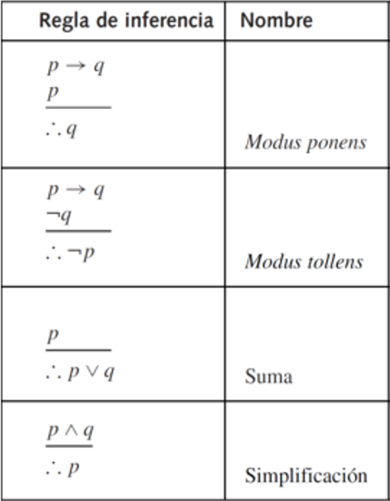
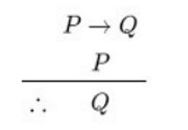
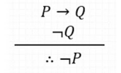
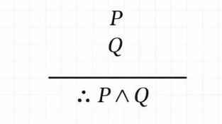
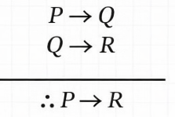
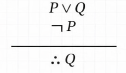

Introduccion
Las reglas de inferencia son principios lógicos que permiten derivar conclusiones válidas a partir de un conjunto de premisas(proposiciones). Una premisa es una proposición que se asume como verdadera desde el inicio de un razonamiento lógico. A partir de estas premisas se aplican reglas formales con el fin de obtener una nueva proposición, denominada conclusión, que es la que se desea demostrar. Este proceso se conoce como una derivación lógica a partir de premisas.
Las reglas de inferencia se utilizan tanto en la lógica proposicional como en la lógica matemática para construir argumentos válidos. Dado que las premisas se consideran verdaderas desde el inicio, si las reglas de inferencia se aplican correctamente, la conclusión obtenida también será verdadera en el sentido lógico.
Un argumento es una secuencia de proposiciones, generalmente representadas como p1,p2,p3,…,pn, a partir de las cuales se deriva una conclusión (q). El símbolo ∴ se lee “por lo tanto” y se utiliza para indicar el paso hacia la conclusión (∴ q).
Sin embargo, es importante destacar que un argumento no afirma que la conclusión sea verdadera en la realidad, sino que establece que, si las premisas son verdaderas, entonces la conclusión también debe serlo. Por esta razón, se dice que un argumento es válido por su forma lógica y no por el contenido de sus proposiciones.
Reglas de inferencia y Tabla guia

-Modus Ponens
Como se muestra en la tabla, la estructura de la regla cuenta con p->q y además con p, eso quiere decir que como premisas tenemos esas dos proposiciones. Siendo que las premisas (p->q) y (p) son verdaderas el resultante es q que también debe ser verdadera, caso contrario si (q) fuese falsa, (p->q) también seria falsa. Para este caso es fácil comprobar dado que se maneja con la tabla de verdad de la implicación. Otro caso puede ser que (p->q) y (–q) como premisas el resultante o conclusión será –p, esto sucede nuevamente por la propiedad de la implicación.
-Modus Tollens
Esta regla de inferencia utiliza como premisas p→q y ¬q. Si ambas premisas se asumen como verdaderas, se concluye necesariamente ¬p (∴¬p). La posible confusión suele surgir a partir de la premisa ¬q, ya que esta indica que la proposición q es falsa. Sin embargo, dicha proposición no constituye la conclusión, sino una de las premisas del argumento. Dado que una implicación solo es falsa cuando el antecedente es verdadero y el consecuente es falso, y puesto que q es falsa, el antecedente p no puede ser verdadero. Por lo tanto, se concluye que p es falsa. Esta conclusión puede verificarse mediante la tabla de verdad de la implicación, considerando los valores de verdad negados y no negados de las proposiciones involucradas.
-Suma o Generalización
La regla de inferencia Suma, también conocida como introducción a la disyunción o generalización, establece que dada una proposición cualquiera p, se puede concluir la disyunción p ∨ q (∴ p ∨ q), donde q es una proposición arbitraria. Esta regla se fundamenta en la propiedad de la disyunción, según la cual una proposición disyuntiva es verdadera si al menos uno de sus componentes lo es. Por lo tanto, si p es verdadera, la proposición p ∨ q será verdadera independientemente del valor de verdad de q. En algunos contextos informales, esta regla se describe como “p o cualquier otra proposición”, aunque formalmente se expresa como la introducción de una disyunción a partir de una premisa verdadera.

-Simplificación
La regla de inferencia Simplificación establece que, dada una premisa de la forma p ∧ q, se puede concluir cualquiera de sus componentes, es decir, p o q (∴ p) o (∴ q). Esta es una de las reglas más sencillas, ya que se fundamenta directamente en la propiedad de la conjunción. Una conjunción es verdadera únicamente cuando ambas proposiciones que la conforman son verdaderas. Por lo tanto, si se asume como verdadera la proposición p ∧ q, se garantiza que tanto p como q son verdaderas de manera individual. En consecuencia, es válido concluir cualquiera de las dos proposiciones que forman la conjunción, dependiendo de cuál sea necesaria en el razonamiento.

-Conjunción
Para esta regla consideramos las premisas p y q como verdaderas. Con base a la propiedad de la conjunción, se establece que ambas proposiciones son verdaderas, entonces su conjunción debe ser verdadera. (∴ p ∧ q) De igual manera que la regla de la simplificación, es una de las reglas más sencillas por que únicamente se aplica la lógica de la conjunción. Sin información adicional se llega a la lógica fundamental de la conjunción llegando a una sola proposición compuesta.
-Silogismo Hipotético
La regla de inferencia Silogismo Hipotético o también conocida como la regla de la transitividad, menciona que al tener dos proposiciones compuestas p->q y q ->r, entonces se concluye p->r (∴p->r). Esta regla se fundamenta en el carácter transitivo de la implicación lógica: si la verdad de p garantiza la verdad de q, y la verdad de q garantiza la verdad de r, entonces la verdad de p garantiza necesariamente la verdad de r. A manera de ejemplo, si el objetivo es ir desde el punto A hasta el punto B, y el único camino posible es atravesar una secuencia de puntos intermedios A→1→2→3→B, entonces, dado que cada tramo mantiene una relación de dependencia, se puede concluir que existe una relación directa entre A y B.
-Silogismo Disyuntivo
El Silogismo Disyuntivo es una regla de inferencia que, para muchos estudiantes, resulta una de las más complejas. Su estructura se compone de las premisas p ∨ q y ¬p, a partir de las cuales se concluye q (∴ q). Esta conclusión se justifica porque, al ser verdadera la proposición ¬p, se establece que p es falsa. Dado que la disyunción p ∨ q es verdadera y una disyunción solo es falsa cuando ambos componentes son falsos, es necesario que q sea verdadera para que la proposición disyuntiva se mantenga verdadera. Por lo tanto, esta regla se fundamenta en el principio lógico de la disyunción, según el cual basta con que una de las proposiciones sea verdadera para que toda la disyunción lo sea.
Ejemplos
Despliega cada regla para ver el ejemplo aplicado.
Modus Tollens
- p → q: Si Zeus es humano, entonces Zeus es mortal.
- ¬ q: Zeus es inmortal.
- ∴ ¬ p: Zeus no es humano.
Si de p se deduce q, pero se niega q, entonces se niega p.
Introducción de la Disyunción (Generalización o Suma)
- p: Zeus es inmortal.
- q: Zeus es humano (proposición cualquiera).
- p ∨ q: Zeus es inmortal o Zeus es humano.
La regla permite agregar cualquier proposición por disyunción a una afirmación verdadera.
Modus Ponens
- p → q: Si hoy es martes, entonces Juan se irá a trabajar.
- p: Hoy es martes.
- p ∴ q: Juan irá a trabajar.
"El modo que, al afirmar, afirma“.
Silogismo Hipotético
- p → q: Si estudio, entonces aprobaré el examen.
- q → r: Si apruebo el examen, entonces pasaré el curso.
- p ∴ r: Si estudio, entonces pasaré el curso.
Permite derivar una conclusión a partir de dos condicionales encadenados.
Silogismo Disyuntivo
- p ∨ q: O llueve o hace sol.
- ¬p: No está lloviendo.
- ∴ q: Entonces, está haciendo sol.
Si se tiene una disyunción y se niega una de las opciones, se puede concluir que la otra opción es verdadera.
Conjunción
- p: María es estudiante.
- q: María trabaja medio tiempo.
- p ∧ q: María es estudiante y trabaja medio tiempo.
Permite combinar dos proposiciones verdaderas en una sola afirmación conjunta.
Adición
- p: El cielo es azul.
- q: La hierba es verde (proposición cualquiera).
- p ∨ q: El cielo es azul o la hierba es verde.
Permite agregar cualquier proposición por disyunción a una afirmación verdadera.
Ejercicio interactivo
CONTENIDO DE LOS EJERICIOS COMO ORACIONES Y UN EJERICIO DEL CODIGO EN MATLAB
Te mostramos el codigo ejecutable. Utilizamos la plataforma de Matlab para presentarte el siguiente codigo que fue utilizado para la representacion de tablas de inferencia y su respectivo analisis
Video
LINK DEL VIDEO CON UN ICONO DE YOUTUBE O COLOCAR EL VIDEO DIRECTO EN LA PAGINA